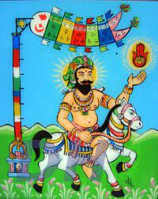

Nagour Mira est une divinité masculine du culte hindou honorée par les communautés d'origine tamoule que l'on trouve dans les Mascareignes, aux Antilles au Suriname et en Guyana. Produit du syncrétisme religieux autrefois à l'œuvre dans les colonies sucrières qui ont eu recours à l'engagisme pour se procurer de la main-d'œuvre agricole, elle n'est que rarement représentée sous des traits anthropomorphes, conformément à la tradition musulmane de laquelle elle est issue. Dans la cour des temples, elle est symbolisée par un mât surmonté d'une main ouverte et au bout duquel bat un pavillon aux couleurs vives durant les cérémonies religieuses.
